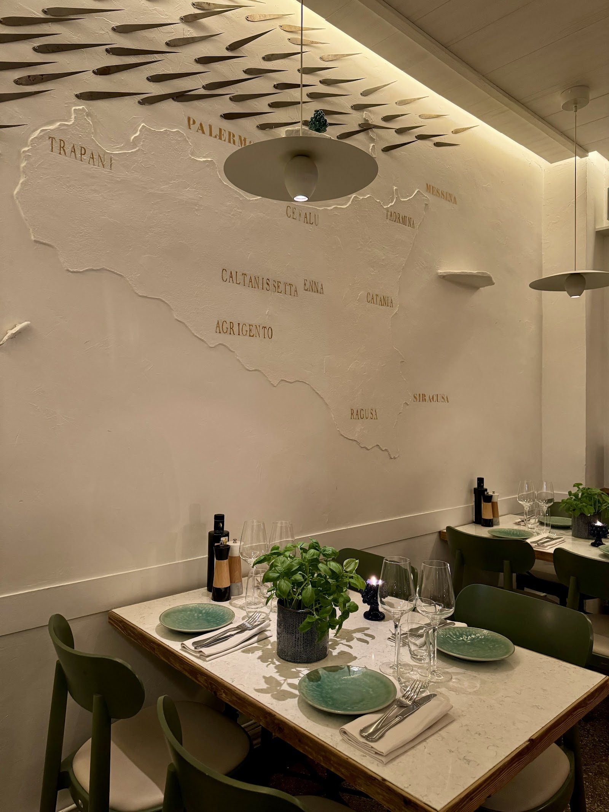

Épicerie fine et table d'enfance au cœur du Ranelagh. Giuseppe Messina ouvre son carnet de goûts — entre Paris et l'Etna.
Giuseppe Messina a gardé le goût de l'enfance. La tomate cueillie à l'aube, la figue encore tiède, le pain qu'on rompt à la sortie du four. Non Solo Cucina est le carnet de ces mémoires-là.
Un laboratoire de parfums, une cuisine ouverte sur la rue du Ranelagh où chaque ingrédient raconte sa colline d'origine. Ici, on ne cuisine pas pour impressionner : on cuisine pour retrouver.
Calamars marinés au citron de Syracuse, aubergines fondantes à la menthe sauvage, gâteau à la ricotta et aux zestes d'agrumes.
Ici, la carte ne divise pas en entrées et plats : elle suit les reliefs de l'île, de la mer aux vergers. Chaque assiette est une coordonnée. Chaque bouchée, un point sur la carte.
Poutargue de thon rouge, calamars marinés, sardines beccafico — les eaux siciliennes dans l'assiette.
Aubergines fondantes, tomates cerises de Pachino, figues fraîches — le soleil capturé à maturité.
Ricotta fraîche, zestes d'agrumes, miel des montagnes — la Sicile sucrée et parfumée.
Huile d'olive des pentes de l'Etna, câpres de Pantelleria, vins de Marsala. L'épicerie prolonge la table : on repart avec un fragment de Sicile sous le bras.
Comme un carnet de route à poursuivre chez soi. Chaque produit est sélectionné par Giuseppe auprès de producteurs qu'il connaît, qu'il visite, qu'il goûte. Rien n'entre ici sans avoir été éprouvé.
Pressées à froid sur les pentes de l'Etna, fruitées et poivrées — le sang vert de la Sicile.
Ambrés, liquoreux ou secs — l'ouest sicilien en bouteille, à boire ou à cuisiner.
Câpres de Pantelleria, tomates séchées, pesto de pistache — le garde-manger de l'île.
Entrez. Levez les yeux : une carte de la Sicile en relief vibre sur le mur, des couteaux de cuisine forment une frise au plafond.
Le carrelage blanc et les banquettes profondes dessinent un refuge tamisé — chic sans apprêt, comme une trattoria qui aurait traversé les Alpes sans rien perdre.
Ici, chaque détail raconte : les couteaux alignés au plafond, la lumière qui glisse sur la faïence grainée, le bois qui porte la patine du temps. On s'assoit, on respire, on est ailleurs.